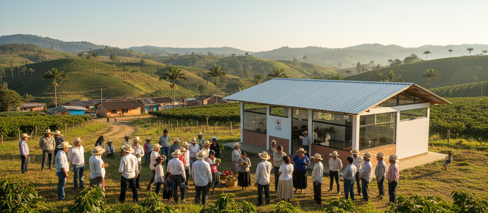

DANE - Departamento Administrativo Nacional de Estadística
De aquí extraemos anualmente la actualización de la Línea de Pobreza Monetaria por departamento y tipología del hogar.
InfoDerecho Colombia nace con el firme propósito de democratizar el acceso a la información pública, social y jurídica en el país. Facilitamos que cualquier ciudadano, sin importar su ubicación, conozca las herramientas de asistencia que ofrece el Estado.
La falta de claridad informativa y las complejidades técnicas constituyen una barrera invisible para las familias de áreas rurales y municipios de difícil acceso. Con este portal, buscamos alinear el acceso a la información con el Objetivo de Desarrollo Sostenible (ODS 16) de Paz, Justicia e Instituciones Sólidas.

Queremos mantener este portal al día. Si encuentra información desactualizada de su municipio o alcaldía local, por favor contáctenos.
Contactar al EquipoDe aquí extraemos anualmente la actualización de la Línea de Pobreza Monetaria por departamento y tipología del hogar.
Entidad responsable de la ejecución y requisitos operativos de subsidios vitales como Renta Ciudadana y Devolución del IVA.
Organismo que rige la clasificación técnica Sisbén IV, utilizado para priorizar a los beneficiarios de planes gubernamentales.